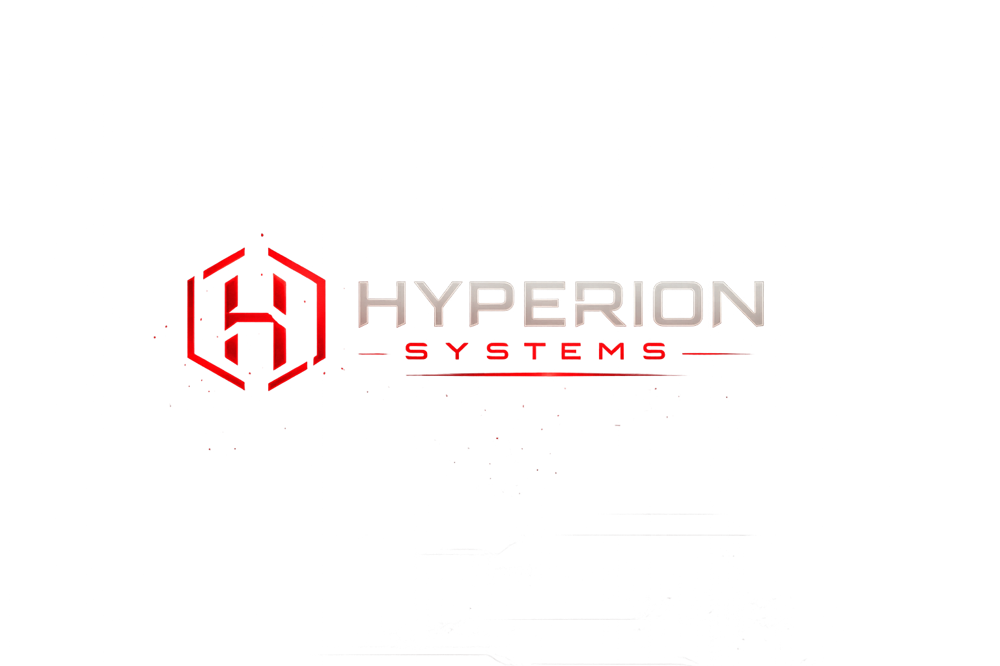

Iniciando sistemas del futuro...

La visión de un titán. La tecnología del futuro.
Hyperion Systems es una empresa tecnológica enfocada en el desarrollo de software moderno, automatización de procesos y soluciones digitales capaces de impulsar el crecimiento empresarial.
Inspirados en Hyperion, titán de la luz y la observación en la mitología griega, buscamos crear herramientas inteligentes que permitan a las empresas evolucionar en la era digital.
Diseñar soluciones tecnológicas innovadoras que generen valor y crecimiento sostenible para nuestros clientes.
Convertirnos en una referencia tecnológica reconocida por innovación, excelencia y transformación digital.
Exploramos nuevas tecnologías para crear herramientas modernas, eficientes y escalables.
Trabajamos con responsabilidad y dedicación para entregar resultados de alta calidad.
Sistemas empresariales personalizados.
Automatización y análisis inteligente.
Infraestructura moderna en la nube.
Protección de información crítica.
Optimización de procesos empresariales.
Estrategias para la transformación digital.
Proyectos
Clientes
Compromiso
Innovación
Actualmente desarrollamos una solución de facturación digital para una tienda especializada en ropa deportiva.
El sistema permitirá gestionar inventario, ventas, clientes y reportes automatizados en tiempo real, optimizando la administración del negocio.
Hyperion Systems desarrolla soluciones tecnológicas diseñadas para optimizar procesos, aumentar la productividad y transformar negocios. Nuestro objetivo es ayudar a empresas y emprendedores a aprovechar el poder de la tecnología para alcanzar nuevos niveles de crecimiento, eficiencia e innovación.
Tecnología moderna adaptada a las necesidades de cada cliente, diseñada para responder a los retos actuales y futuros.
Automatización de procesos para ahorrar tiempo, optimizar recursos y aumentar la productividad.
Protección de información y sistemas mediante prácticas modernas y confiables de seguridad tecnológica.
Soluciones diseñadas para acompañar la evolución de empresas, emprendedores y proyectos en expansión.
Se trata de crear herramientas que ayuden a las empresas a crecer, vender más y tomar mejores decisiones.
Cada proyecto que desarrollamos busca generar un impacto real, mejorar procesos y aportar valor a quienes confían en nosotros.
Mientras otros observan el presente, nosotros construimos el mañana.
Creemos que la tecnología no consiste únicamente en crear algo nuevo, sino en generar un impacto positivo y duradero para las personas y las empresas.
No trabajamos únicamente para entregar software.
Trabajamos para construir relaciones de confianza, impulsar el crecimiento de nuestros clientes y generar resultados que perduren en el tiempo.
Hyperion Systems desarrolla soluciones tecnológicas que ayudan a las empresas a evolucionar, automatizar procesos y construir un futuro digital sólido.
Impulsando negocios mediante innovación.
📞 310 862 3315
📞 302 250 4892
📸 Instagram: @hyperionsystems
🎵 TikTok: @hyperionsystems
Hyperion Systems desarrolla soluciones tecnológicas que ayudan a las empresas a evolucionar, automatizar procesos y construir un futuro digital sólido.